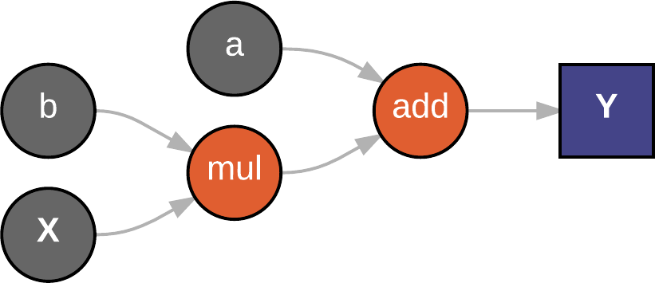

Deep learning with

Machine learning
Learning from data without being
explicitly programmed
- Linear regression
- Logistic regression
- Decision trees
- Artificial neural networks
- And much more...
Linear regression
Predicting continuous values with linear weights
Logistic regression
Classification with linear weights
Orange dot Green dotDecision trees
Predictions by splitting data in multiple steps
What do people think of the weather?
Artificial neural networks
Multi layered networks that can learn nonlinear functions
Input layer Hidden layer Output layer
Deep learning
Artificial neural networks with many layers
Input layer Hidden layers Output layer
Features at multiple levels of abstraction

Use cases include
- Speech recognition
- Image recognition
- Image captioning
- Natural language processing
- Recommendation systems
- Text generation
Training a model
Minimizing error with gradient descent
Gradient descent follows the steepest decline along the error surface
Intercept Slope Hot Crazy
What is TensorFlow?
"An open-source software library for Machine Intelligence"
Or Google's attempt to take over the world of A.I.
It seems to be working outTensors
Arrays with any number of dimensions
- A 0-D tensor is called a scalar
- A 1-D tensor is called a vector
- A 2-D tensor is called a matrix
- An N-D tensor is called.. just a tensor
Computation graphs
Every calculation (operation) in TensorFlow is a node
Nodes are connected by edges, here the tensors flows between operations.
$$Y = a + bX$$

Linear regression example
Code
Output
import tensorflow as tf
# Define trainable variables
intercept = tf.Variable(2.0)
slope = tf.Variable(-1.0)
# Data intercept = 1.0, slope = 0.5
X = tf.constant([[0.0], [1.0], [2.0], [3.0]])
Y = tf.constant([[1.0], [1.5], [2.0], [2.5]])
# Calculate the prediction
prediction = X * slope + intercept
# Run the prediction and output the result
sess = tf.Session()
sess.run(tf.global_variables_initializer())
print(sess.run(prediction))
[[ 2.]
[ 1.]
[ 0.]
[-1.]]
Code
Output
# Define trainable variables
intercept = tf.Variable(2.0)
slope = tf.Variable(-1.0)
# Data intercept = 1.0, slope = 0.5
X = tf.constant([[0.0], [1.0], [2.0], [3.0]])
Y = tf.constant([[1.0], [1.5], [2.0], [2.5]])
# Calculate the prediction and it's error
prediction = X * slope + intercept
squared_errors = tf.square(Y - prediction)
mse = tf.reduce_mean(squared_errors)
# Run the prediction and output the result
sess = tf.Session()
sess.run(tf.global_variables_initializer())
print(sess.run(squared_errors))
print(sess.run(mse))
[[ 1. ]
[ 0.25]
[ 4. ]
[ 12.25]]
4.375
Code
Output
# Calculate the prediction and it's error
prediction = X * slope + intercept
squared_errors = tf.square(Y - prediction)
mse = tf.reduce_mean(squared_errors)
# Define the gradient descent operation
train_op = tf.train.GradientDescentOptimizer(
learning_rate=0.1).minimize(mse)
# Run the prediction and output the result
sess = tf.Session()
sess.run(tf.global_variables_initializer())
for i in range(100): # Optimize for 100 steps
_, a, b, err = sess.run([
train_op, intercept, slope, mse])
if i % 10 == 0:
print('{} {:.2f} {:.2f} {:.2f}'
.format(i, a, b, err))
0 2.00 -1.00 4.38
10 1.76 0.15 0.21
20 1.41 0.31 0.06
30 1.22 0.40 0.02
40 1.12 0.44 0.01
50 1.07 0.47 0.00
60 1.04 0.48 0.00
70 1.02 0.49 0.00
80 1.01 0.50 0.00
90 1.01 0.50 0.00
Deep Learning in TensorFlow
Let's build this Trump robot!
Deep Trump tweet generator
Over 30.000 tweets since 2009
About 20.000 usable tweets (no retweets etc)
Recurrent neural network model
Acts on multiple time steps
LSTM (Long Short-Term Memory) cells can remember state over many time steps
In our case, it will learn to remember the context of the current word and sentence
ReLU (Rectified Linear Unit) adds more nonlinearity
It will give the network greater modelling power, improving prediction quality
Softmax squashes the probabilities of all outputs to a sum of 1.0
This allows us to sample characters from a probability distribution when generating tweets
Data format
| Features (input data) | ||||||||||||
| ⇒ | # | T | r | u | m | p | 2 | 0 | 1 | 6 | ||
| 81 | 4 | 46 | 71 | 74 | 66 | 69 | 16 | 14 | 15 | 20 | ||
| Labels (output data) | ||||||||||||
| # | T | r | u | m | p | 2 | 0 | 1 | 6 | ⛔ | ||
| 4 | 46 | 71 | 74 | 66 | 69 | 16 | 14 | 15 | 20 | 81 | ||
| Mask | ||||||||||||
| 1 | 1 | 1 | 1 | 1 | 1 | 1 | 1 | 1 | 1 | 1 | 0 | 0 |
TensorFlow implementation
import os
import numpy as np
CACHE_DIR = os.path.dirname(os.path.abspath(__file__)) + '/cache'
def load():
return DataSet(
np.load(CACHE_DIR + '/features.npy'),
np.load(CACHE_DIR + '/labels.npy'),
np.load(CACHE_DIR + '/mask.npy')
)
class DataSet:
def __init__(self, features, labels, mask):
self.features = features
self.labels = labels
self.mask = mask
def split_test_train(self, test_ratio=0.1):
n_test = round(self.features.shape[0] * test_ratio)
test = DataSet(self.features[:n_test], self.labels[:n_test], self.mask[:n_test])
train = DataSet(self.features[n_test:], self.labels[n_test:], self.mask[n_test:])
return test, train
import tensorflow as tf
def make_weight_variable(name, num_inputs, num_outputs):
return tf.get_variable(
name,
[num_inputs, num_outputs],
initializer=tf.contrib.layers.variance_scaling_initializer()
)
class Model:
def __init__(self, chars, max_steps, lstm_units=250, l1_units=200, l2_units=150,
learning_rate=0.001, l2=0.001):
self.chars = chars
self.max_steps = max_steps
# Define placeholders for training data
self.features = tf.placeholder(dtype=tf.int32, shape=[None, max_steps])
self.labels = tf.placeholder(dtype=tf.int32, shape=[None, max_steps])
self.mask = tf.placeholder(dtype=tf.float32, shape=[None, max_steps])
# Define LSTM layer
features_one_hot = tf.one_hot(self.features, len(chars) + 1, dtype=tf.float32)
lstm_3d, _ = tf.nn.dynamic_rnn(
cell=tf.contrib.rnn.LSTMCell(num_units=lstm_units),
dtype=tf.float32,
inputs=features_one_hot
)
lstm_flat = tf.reshape(lstm_3d, [-1, lstm_units])
# Define first ReLU layer
l1_weights = make_weight_variable("l1-weights", lstm_units, l1_units)
l1_biases = tf.Variable(0.1, name='l1-biases')
layer1 = tf.nn.relu(tf.matmul(lstm_flat, l1_weights) + l1_biases)
# Define second ReLU layer
l2_weights = make_weight_variable("l2-weights", l1_units, l2_units)
l2_biases = tf.Variable(0.1, name='l2-biases')
layer2 = tf.nn.relu(tf.matmul(layer1, l2_weights) + l2_biases)
# Define output layer
out_weights = make_weight_variable("out-weights", l2_units, len(chars) + 1)
out_biases = tf.Variable(0.1, name='out-biases')
self.out_logits = tf.matmul(layer2, out_weights) + out_biases
# Define training objective
loss_flat = tf.nn.sparse_softmax_cross_entropy_with_logits(
labels=tf.reshape(self.labels, [-1]),
logits=self.out_logits
)
loss_flat_masked = loss_flat * tf.reshape(self.mask, [-1])
self.loss = tf.reduce_mean(loss_flat_masked)
weight_vars = [v for v in tf.trainable_variables() if 'bias' not in v.name]
self.l2_loss = tf.add_n([tf.nn.l2_loss(v) for v in weight_vars]) * l2
optimizer = tf.train.AdamOptimizer(learning_rate=learning_rate)
self.train_op = optimizer.minimize(self.loss + self.l2_loss)
import random
import numpy as np
import tensorflow as tf
MAX_SAMPLE_LENGTH = 200
class TweetSampler:
def __init__(self, session, model, temperature=1.0):
self.session = session
self.model = model
self.predictions_flat = tf.nn.softmax(model.out_logits / temperature, 1)
def sample(self):
# Start with the start symbol, which has label num_chars
features = [len(self.model.chars)]
tweet = ''
for i in range(MAX_SAMPLE_LENGTH):
next_class = self.sample_next_class(features[-self.model.max_steps:])
if next_class == len(self.model.chars):
break
features.append(next_class)
tweet += self.model.chars[next_class]
return tweet.strip()
def sample_next_class(self, classes):
sample_input = np.zeros([1, self.model.max_steps])
sample_input[:, :len(classes)] = classes
predictions = self.session.run(
self.predictions_flat,
feed_dict={
self.model.features: sample_input,
}
)
probabilities = predictions[len(classes) - 1]
rnd = random.random()
accum = 0
for idx in range(len(probabilities)):
accum += probabilities[idx]
if accum >= rnd:
return idx
return np.argmax(classes)
import json
import math
import os
import tensorflow as tf
import data_set
from model import Model
from tweet_sampler import TweetSampler
CACHE_DIR = os.path.dirname(os.path.abspath(__file__)) + '/cache'
BATCH_SIZE = 64
NUM_EPOCHS = 200
test_data, train_data = data_set.load().split_test_train()
with open(CACHE_DIR + '/settings.json') as file:
settings = json.load(file)
model = Model(
settings['chars'],
settings['maxSteps'],
lstm_units=500,
l1_units=400,
l2_units=300,
l2=0.00005
)
sess = tf.Session()
sess.run(tf.global_variables_initializer())
sampler = TweetSampler(sess, model, temperature=0.8)
def output_tweet_sample():
print('Sampling tweet....\n\n---------------------------------------')
print(sampler.sample())
print('---------------------------------------\n')
def process_data(data, ops):
num_examples = data.features.shape[0]
num_batches = math.ceil(num_examples / BATCH_SIZE)
for batch in range(num_batches):
start = batch * BATCH_SIZE
end = (batch + 1) * BATCH_SIZE
yield sess.run(
ops,
feed_dict={
model.features: data.features[start:end],
model.labels: data.labels[start:end],
model.mask: data.mask[start:end]
}
)
def calc_test_error():
total_err = 0
num_batches = 0
for err in process_data(test_data, ops=model.loss):
total_err += err
num_batches += 1
return total_err / num_batches
def train_epoch(epoch):
num_batches = 0
total_err = 0
total_l2 = 0
ops = [model.train_op, model.loss, model.l2_loss]
for _, err, l2 in process_data(train_data, ops=ops):
total_err += err
total_l2 += l2
num_batches += 1
print('EPOCH {}: train = {:.5}, test = {:.5}, L2 = {:.5}'.format(
epoch, total_err / num_batches, calc_test_error(), total_l2 / num_batches))
output_tweet_sample()
saver = tf.train.Saver(max_to_keep=NUM_EPOCHS)
output_tweet_sample()
for epoch in range(0, NUM_EPOCHS):
train_epoch(epoch)
save_path = saver.save(sess, CACHE_DIR + "/model/model.ckpt", global_step=epoch)
print("Model saved in file: %s" % save_path)
Running the training code
$ python3 train.py
Sampling tweet....
---------------------------------------
W6upDK7rEFkkMu?Xno5wT)Wr'XIG'zWNb$E6njei0
---------------------------------------
EPOCH 0: train = 2.1826, test = 1.8535, L2 = 0.065104
Sampling tweet....
---------------------------------------
Tomup's shem beade s Pand Preckile Ammanar Ifain in the Obamay. The soorso I-Grat Liad is ack is an groming chat go with Amp remelas wor poom bf the proutthoul Mrane. I- O FRTET GE that I dond boing!
---------------------------------------
Model saved in file: /home/ede/repos/trumpet/cache/model/model.ckpt-0
EPOCH 1: train = 1.6961, test = 1.6108, L2 = 0.082404
Sampling tweet....
---------------------------------------
The wascon to the workn of the Whind fould monned - lost just that mysices for com.).
---------------------------------------
Model saved in file: /home/ede/repos/trumpet/cache/model/model.ckpt-1
EPOCH 2: train = 1.5106, test = 1.4638, L2 = 0.093441
Sampling tweet....
---------------------------------------
Wasting a dick and of the BOfler Bartor conting support of toums. Fom Hampshers. Koppord w/Ther thann. I will See Happer. Big is smailes are, problems. America, the pasiques coulst in I wanded and par
---------------------------------------
After more epochs it gets better :)
EPOCH 81: train = 0.80645, test = 1.2222, L2 = 0.2602
Sampling tweet....
---------------------------------------
"@Patrick I through my news a better action they'vo know how to play the shirt too let the players and killing thousands of job!"
---------------------------------------
Model saved in file: /home/ede/repos/trumpet/cache/model/model.ckpt-81
EPOCH 82: train = 0.80586, test = 1.227, L2 = 0.26108
Sampling tweet....
---------------------------------------
"@erinbrinz: @foxandfriends: Amnesty Can Meason Exastele 'Globe thought's one on iP. You have easy still even planned in order."
---------------------------------------
Model saved in file: /home/ede/repos/trumpet/cache/model/model.ckpt-82
EPOCH 83: train = 0.80409, test = 1.2229, L2 = 0.2618
Sampling tweet....
---------------------------------------
@toomlyinl @bringinsfording @bottomert @BarackObama keep Democrab, the government @BarackObama send three honest http://t.co/HyYNOxFS50"
---------------------------------------
Success!
All code is on Github!
| Trumpet | https://github.com/EdeMeijer/trumpet |
|---|---|
| Slides | https://github.com/EdeMeijer/pygrunn-2017 |
ede@buybrain.io